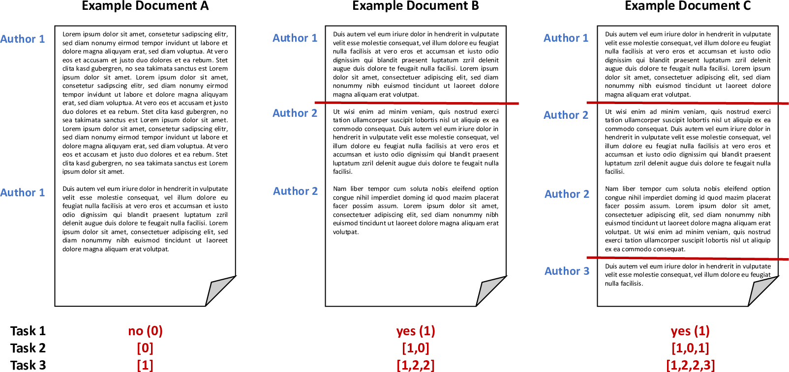

<main>
    <div class="uk-section uk-section-default">
        <div class="uk-container uk-margin-small">
            <h1 class="uk-margin-remove-top">Style Change Detection 2021</h1>
            <ul class="uk-list">
                <li><span data-uk-icon="chevron-down"></span><a class="uk-margin-small-right" href="#synopsis">Synopsis</a></li>
                <li><span data-uk-icon="chevron-down"></span><a class="uk-margin-small-right" href="#task">Task</a></li>
                <li><span data-uk-icon="chevron-down"></span><a class="uk-margin-small-right" href="#data">Data</a></li>
                <li><span data-uk-icon="chevron-down"></span><a class="uk-margin-small-right" href="#evaluation">Evaluation</a></li>
                <li><span data-uk-icon="chevron-down"></span><a class="uk-margin-small-right" href="#submission">Submission</a></li>
                <li><span data-uk-icon="chevron-down"></span><a class="uk-margin-small-right" href="#results">Results</a></li>
                <li><span data-uk-icon="chevron-down"></span><a class="uk-margin-small-right" href="#related-work">Related Work</a></li>
                <li><span data-uk-icon="chevron-down"></span><a class="uk-margin-small-right" href="#task-committee">Task Committee</a></li>
            </ul>
        </div>

        <div class="uk-container uk-margin-medium">

            <h2 id="synopsis">Synopsis</h2>
            <ul>
                <li>Task: Given a document, determine the number of authors and at which positions the author changes.</li>
                <li>Input: StackExchange questions and answers, combined into documents [<a
href="https://zenodo.org/record/4589145#.YFDOwnVKhhF">data</a>] <!--<a
href="{{'../../data.html#pan21-style-change-detection' | relative_url }}">data</a>]-->
                </li>
                <li>Output: Whether a document has multiple authors, how many and where authorship changes [<a href="https://github.com/pan-webis-de/pan-code/tree/master/clef21/style-change-detection" target="_blank">verifier</a>]
                </li>
                <li>Evaluation: F1 [<a href="https://github.com/pan-webis-de/pan-code/tree/master/clef21/style-change-detection" target="_blank">code</a>]
                </li>
                <li>Submission: Deployment on TIRA [<a href="#submission">submit</a>]</li>
            </ul>

            <h2 id="task">Task</h2>
            <p> The goal of the style change detection task is to identify text positions within a given multi-author document at which the author switches. Hence, a fundamental question is the following: If multiple authors together have written a text, can we find evidence for this fact, e.g., do we have a means to detect variations in the writing style? Answering this question belongs to the most difficult and most interesting challenges in author identification: Style change detection is the only means to detect plagiarism in a document if no comparison texts are given; likewise, style change detection can help to uncover gift authorships, to verify a claimed authorship, or to develop new technology for writing support.
            </p>

            <p>Previous editions of the Style Change Detection task aim at e.g., detecting whether a document is single- or multi-authored (<a href="https://pan.webis.de/clef18/pan18-web/style-change-detection.html">2018</a>), the actual number of authors within a document (<a href="https://pan.webis.de/clef19/pan19-web/style-change-detection.html">2019</a>) or whether there was a style change between two consecutive paragraphs (<a href="https://pan.webis.de/clef20/pan20-web/style-change-detection.html">2020</a>). Considering the promising results achieved by the submitted approaches, we aim to steer the task back to its original goal: detecting the exact position of authorship changes. Therefore, the task for PAN'21 is to first detect whether a document was authored by one or multiple authors, for two-author documents, the task is to find the position of the authorship change and for multi-author documents, the task is to find all positions of authorship changes.</p>
            
            <p>Given a document, we ask participants to answer the following three questions:</p>
            <ul>
                <li><b>Single vs. Multiple.</b> Given a text, find out whether the text is written by a single author or by multiple authors (task 1). </li>
                <li><b>Style Change Basic.</b> Given a text written by two or more authors and that contains a number of style changes, find the position of the changes (task 2).</li>
                <li><b>Style Change Real-World.</b> Given a text written by two or more authors, find all positions of writing style change, i.e., assign all paragraphs of the text uniquely to some author out of the number of authors you assume for the multi-author document (task 3). </li>
            </ul>

            <p>All documents are provided in English and may contain an arbitrary number of style changes, resulting from at most five different authors. However, style changes may only occur between paragraphs (i.e., a single paragraph is always authored by a single author and does not contain any style changes). </p>


            <p>The following figure illustrates some possible scenarios and the expected output for the tasks:</p>
            <br>
            

            <h2 id="data">Data</h2>
            <p>To develop and then test your algorithms, a data set including ground truth information is provided, it contains texts from a relatively narrow set of subjects related to technology.</p>

            <p>The dataset is split into three parts:</p>

            <ol>
                <li><i>training set:</i> Contains 70% of the whole data set and includes ground truth data. Use this set to develop and train your models.</li>
                <li><i>validation set:</i> Contains 15% of the whole data set and includes ground truth data. Use this set to evaluate and optimize your models. </li>
                <li><i>test set:</i> Contains 15% of the whole data set. For the documents on the test set, you are not given ground truth data. This set is used for evaluation (see later).</li>
            </ol>

            <p>You are free to use additional external data for training your models. However, we ask you to make the additional data utilized freely available under a suitable license. </p>

            <h3 id="input_format">Input Format</h3>
            <p>The dataset is based on user posts from various sites of the StackExchange network, covering different topics. We refer to each input problem (i.e., the document for which to detect style changes) by an ID, which is subsequently also used to identify the submitted solution to this input problem. We provide one folder for train, validation and test data.</p>

            <p>For each problem instance <code>X</code> (i.e., each input document), two files are provided:</p>
            <ol>
                <li><code>problem-X.txt</code> contains the actual text, where paragraphs are denoted by <code>\n\n</code>.</li>
                <li><code>truth-problem-X.json</code> contains the ground truth, i.e., the correct solution in JSON format:
                    <pre class="prettyprint linenums uk-margin-remove-bottom"><code class="lang-json">{
                                "authors": NUMBER_OF_AUTHORS,
                                "site": SOURCE_SITE,
                                "multi-author": RESULT_TASK1,
                                "changes": RESULT_ARRAY_TASK2,
                                "paragraph-authors": RESULT_ARRAY_TASK3
                            }</code></pre>

                    <p>The result for task 1 (key "multi-author") is a binary value (1 if the document is multi-authored, 0 if the document is single-authored). The result for task 2 (key "changes") is represented as an array, holding a binary for each pair of consecutive paragraphs within the document (0 if there was no style change, 1 if there was a style change). If the document is single-authored, the solution to task 2 is an array filled with 0s. For task 3 (key "paragraph-authors"), the result is the order of authors contained in the document (e.g., <code>[1, 2, 1]</code> for a two-author document), where the first author is "1", the second author appearing in the document is referred to as "2", etc. Furthermore, we provide the total number of authors and the Stackoverflow site the texts were extracted from (i.e., topic).</p>

                    <p>An example of a multi-author document, where there was a style change between the third and fourth paragraph could look as follows (we only list the relevant key/value pairs here):</p>
                    <pre class="prettyprint linenums uk-margin-remove-bottom"><code class="lang-json">{
                               "multi-author": 1, 
                               "changes": [0,0,1,...],
                               "paragraph-authors": [1,1,1,2,...]
                            }</code></pre>
                    <p>A single-author document would have the following form (again, only listing the relevant key/value pairs):
                    </p>
                    <pre class="prettyprint linenums uk-margin-remove-bottom"><code class="lang-json">{
                               "multi-author": 0, 
                               "changes": [0,0,0,...],
                               "paragraph-authors": [1,1,1,...]
                            }</code></pre>
                </li>
            </ol>

            <h3 id="output_format">Output Format</h3>
            <p>To evaluate the solutions for the tasks, the classification results have to be stored in a single file for each of the input documents. Please note that we require a solution file to be generated for each input problem. The data structure during the evaluation phase will be similar to that in the training phase, with the exception that the ground truth files are missing.</p>

            <p>For each given problem problem-X.txt, your software should output the missing solution file
                <code>solution-problem-X.json</code>, containing a JSON object with three properties, one for each task. The actual solution for task 1 is a binary value (0 or 1). For task 2, the solution is an array containing a binary value for each pair of consecutive paragraphs. For task 3, the solution is an array containing the author number (in order of appearance in the given document) for each paragraph.</p>

            <p>An example solution file for a multi-authored document is featured in the following:</p>

            <pre class="prettyprint linenums uk-margin-remove-bottom"><code class="lang-json">{
                                "multi-author": 1, 
                                "changes": [0,0,1,...],
                                "paragraph-authors": [1,1,1,2,...]
                            }</code></pre>

            <p>For a single-authored document the solution file may look as follows:</p>

            <pre class="prettyprint linenums uk-margin-remove-bottom"><code class="lang-json">{
                                "multi-author": 0,
                                "changes": [0,0,0,...],
                                "paragraph-authors": [1,1,1,...]
                            }</code></pre>

            <p>We provide you with a script to check the validity of the solution files [<a
href="https://github.com/pan-webis-de/pan-code/tree/master/clef21/style-change-detection" target="_blank">verifier and tests</a>].</p>
            
            <h2 id="evaluation">Evaluation</h2>
            <p>Submissions are evaluated by the F1-score measure for each document. The three tasks are evaluated
independently based on the obtained accuracy measures. We compute the macro-averaged F1-score value across all
documents. </p>

            <p>We provide you with a script to compute those measures based on the produced output-files [<a
href="https://github.com/pan-webis-de/pan-code/tree/master/clef21/style-change-detection">evaluator and tests</a>].</p>

            <h2 id="submission">Submission</h2>
            <p>Once you finish tuning your approach on the validation set, your software will be tested on the test set. During the competition, the test set will not be released publicly. Instead, we ask you to submit your software for evaluation at our site as described below.</p>

            <p>We ask you to prepare your software so that it can be executed via command line calls. The command shall take as input (i) an absolute path to the directory of the test corpus and (ii) an absolute path to an empty output directory:</p>

            <pre class="prettyprint"><code>mySoftware -i INPUT-DIRECTORY -o OUTPUT-DIRECTORY</code></pre>

            <p>Within <code>INPUT-DIRECTORY</code>, you will find the set of problem instances (i.e., <code>problem-[id].txt</code> files). For each problem instance you should produce the solution file <code>solution-problem-[id].json</code> in the <code>OUTPUT-DIRECTORY</code>. For instance, you read <code>INPUT-DIRECTORY/problem-12.txt</code>, process it and write your results to <code>OUTPUT-DIRECTORY/solution-problem-12.json</code>.</p>

            <p>In general, this task follows PAN's software submission strategy <a href="{{ 'organization.html#participation-guide' | relative_url }}">described here</a>.</p>

            <p>Note: By submitting your software you retain full copyrights. You agree to grant us usage rights only for the purpose of the PAN competition. We agree not to share your software with a third party or use it for other purposes than the PAN competition.</p>

            <h2 id="results">Results</h2>

              <table class="uk-table uk-table-divider uk-table-small uk-table-hover">
                  <thead>
                  <tr>
                      <th>Team</th>
                      <th colspan="3" align="center">F1</th>
                  </tr>
                  <tr>
                      <th></th>
                      <th>Task 1</th>
                      <th>Task 2</th>
                      <th>Task 3</th>
                  </tr>
                  </thead>
                  <tbody>
                  <tr>
                      <td>Zhang et al.</td>
                      <td>0.753</td>
                      <td>0.751</td>
                      <td>0.501</td>
                  </tr>
                  <tr>
                      <td>Strom</td>
                      <td>0.795</td>
                      <td>0.707</td>
                      <td>0.424</td>
                  </tr>
                  <tr>
                      <td>Singh et al.</td>
                      <td>0.647</td>
                      <td>0.660</td>
                      <td>0.338</td>
                  </tr>
                  <tr>
                      <td>Deibel et al.</td>
                      <td>0.621</td>
                      <td>0.669</td>
                      <td>0.263</td>
                  </tr>
                  <tr>
                      <td>Nath</td>
                      <td>0.704</td>
                      <td>0.647</td>
                      <td>---</td>
                  </tr>
                  </tbody>
              </table>

          
            <h2 id="related-work">Related Work</h2>
            <ul>
              <li>
                    <a href="{{ 'publications.html#?q=2020%20Zangerle' | relative_url }}">Style Change Detection, PAN@CLEF'20</a>
                </li>
                <li>
                    <a href="{{ 'publications.html#?q=2019%20Zangerle' | relative_url }}">Style Change Detection, PAN@CLEF'19</a>
                </li>
                <li>
                    <a href="{{ 'publications.html#?q=2018%20Tschuggnall' | relative_url }}">Style Change Detection, PAN@CLEF'18</a>
                </li>
                <li>
                    <a href="{{ 'publications.html#?q=2017%20Tschuggnall' | relative_url }}">Style Breach Detection, PAN@CLEF'17</a>
                </li>
                <li>
                    <a href="{{ 'publications.html#?q=2016%20Tschuggnall' | relative_url }}">PAN@CLEF'16</a> (<i>Clustering by
                    Authorship Within and Across Documents</i> and <i>Author Diarization</i> section)
                </li>
                <li>J. Cardoso and R. Sousa. Measuring the performance of ordinal classification. International Journal of Pattern Recognition and Artificial Intelligence 25.08, pp. 1173-1195, 2011
                </li>
                <!--<li>Marti A. Hearst. <a href="http://anthology.aclweb.org/J/J97/J97-1003.pdf">TextTiling:
                    Segmenting Text into Multi-paragraph Subtopic Passages.</a>. In Computational Linguistics,
                    Volume 23, Issue 1, pages 33-64, 1997.
                </li>-->
                <li>Benno Stein, Nedim Lipka and Peter Prettenhofer. <a href="https://webis.de/publications.html#?q=stein_2011a">Intrinsic
                    Plagiarism Analysis</a>. In Language Resources and Evaluation, Volume 45, Issue 1, pages 63-82, 2011.
                </li>
                <!--<li>
                    Patrick Juola. <a href="http://portal.acm.org/citation.cfm?id=1373451">Authorship
                    Attribution</a>. In Foundations and Trends in Information Retrieval, Volume 1, Issue 3,
                    March 2008.
                </li>-->
                <li>
                    Efstathios Stamatatos. <a href="http://onlinelibrary.wiley.com/doi/10.1002/asi.21001/full">A
                    Survey of Modern Authorship Attribution Methods</a>. Journal of the American Society for Information Science and Technology, Volume 60, Issue 3, pages 538-556, March 2009.
                </li>
            </ul>
            <h2 id="task-committee">Task Committee</h2>
            <div data-uk-grid class="uk-grid uk-grid-match uk-grid-small thumbnail-card-grid">
                {% include people-cards/zangerle.html %}
                {% include people-cards/mayerl.html %}
                {% include people-cards/potthast.html %}
                {% include people-cards/stein.html %}
            </div>
            <div class="uk-container uk-padding-large uk-padding-remove-bottom">
                {% include organizations/clef-organizations-section.html year=2021 %}
            </div>
        </div>
    </div>
</main>
